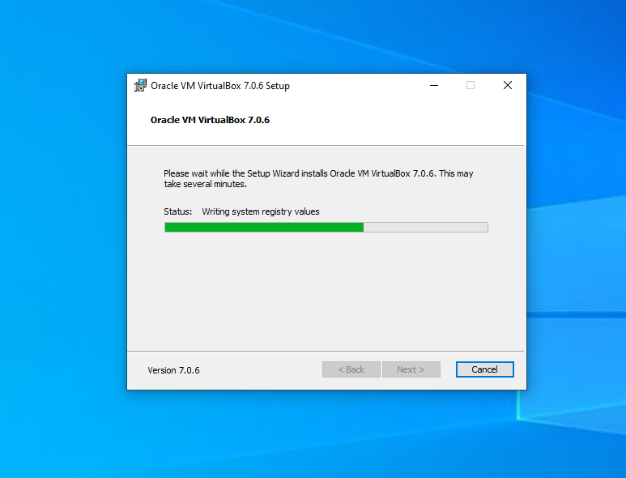
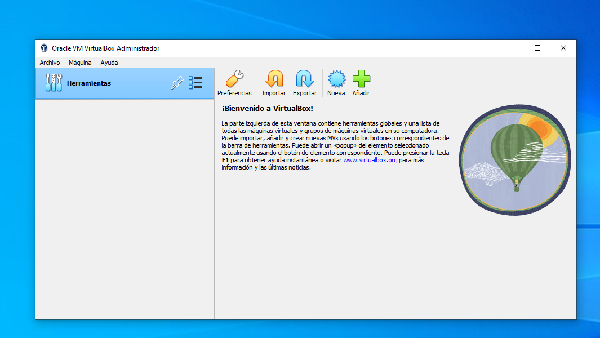
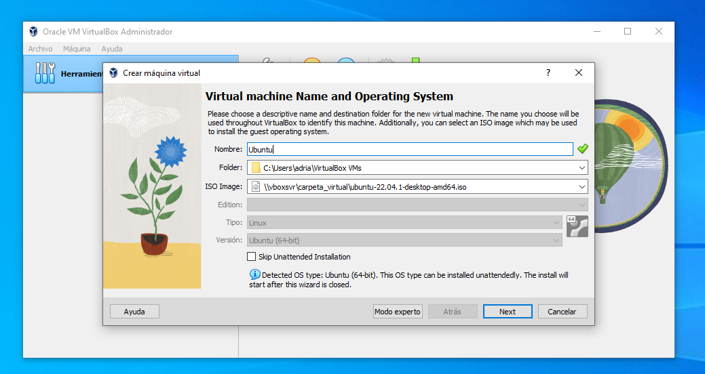
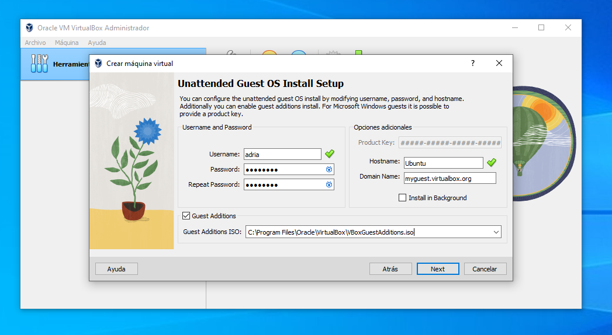
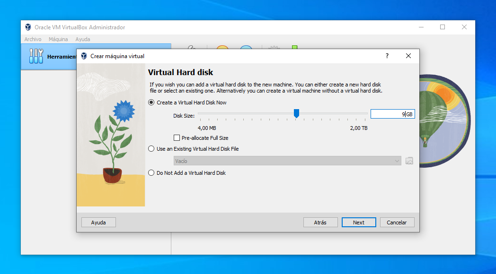
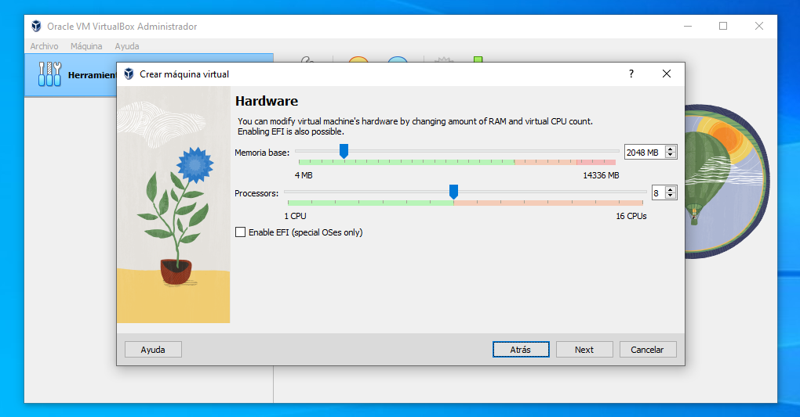
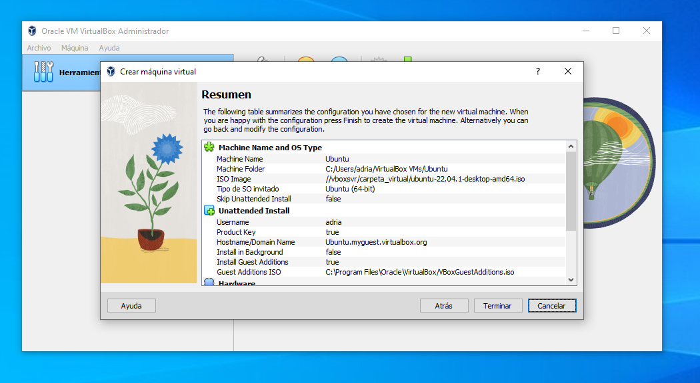
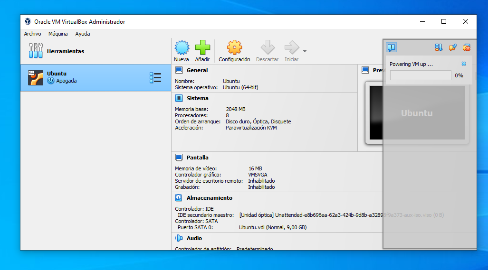

Entre los muchos objetivos de esta asignatura está el de "ofrecer" a los alumnos escenarios de trabajo "reales". Esto implica, además de manejar código y trabajar con datos "puros", aprender a moverse y administrar entornos de servidor y bases de datos. Como ya sospechas, no disponemos de servidores reales: tienen un coste muy elevado y necesitan mantenimiento. Pero también resultaria imprudente permitir que muchas personas accedan a un equipo de estas características. Cualquier fallo o error podría destruir todo el sistema. Una infraestructura real no es viable para el proceso de aprendizaje: debemos disponer de un entorno controlado donde cometer errores sin riesgo.
Para resolver este inconveniente, cada uno de vosotros deberá crear y administrar una máquina virtual con un sistema operativo Linux, donde alojaremos las bases de datos. Esto permitirá un aprendizaje individualizado, y cada uno será responsable de su sistema. Si cometéis un error no dañaréis nada. A la práctica no existe diferencia alguna entre acceder a una máquina virtual y hacerlo a un servidor real. Además, gracias a esto aprenderás a:
Existen dos problemas importantes que afectan a los requisitos de "hardware" para el trabajo que vamos a realizar en esta asignatura. Por un lado, las máquinas virtuales requieren una cantidad razonable de espacio en disco: deben tener el tamaño suficiente como para poder instalar el Sistema Operativo, pero también un margen de memória para poder operar con los archivos, alojar datos, etc. Una máquina virtual simple puede necesitar 10GB de espacio asignado, que no es mucho. Pero en nuestro caso vamos a trabajar, además, con bases de datos que van a ocupar una cantidad importante de espacio. Es posible, también, que en la máquna virtual guardemos copias de seguridad de los datos, exportados en formato .sql o .csv. Esto hará que 10GB no sean suficientes.
El segundo de los asuntos importantes es que debemos ser capaces de transportar la máquina virtual a otro ordenador. Es posible que a lo largo del curso sea necesario usar algún recurso de la Universidad. Las aulas informatizadas de la Facultat de Ciències de la Comunicació disponen de VirtualBox instalado, por lo que es posible usar nuestra máquina virtual ya creada en estos ordenadores.
Para resolver lo anterior, vamos a instalar la máquina virtual en un disco duro externo. Para ello vas a necesitar:
En total, el coste del conjunto no debería superar los 35€/40€. Si, sé que es un gasto... Pero cuando acabemos la asignatura podréis usar este dispositivo para guardar otras cosas...
Cuando tengáis este hardware, podréis seguir con los siguientes pasos.
VirtualBox es un software de licencia libre que permite crear y gestionar máquinas virtuales. Funciona en Windows, Mac y Linux. El primer paso será descargar este programa. Para ello, puedes acceder a https://www.virtualbox.org/wiki/Downloads. Selecciona la descarga adecuada para tu sistema operativo, e instala el programa en tu ordenador.
Para crear la máquina virtual es necesario disponer de una ISO (imágen de disco) de la distribución de Linux que vas a instalar. Puedes buscar en Google la distribución que tu quieras. De hecho, crear máquinas virtuales es una forma magnífica de testear distribuciones y jugar con Linux y otros sistemas operativos, sin renunciar nunca a tu dependencia de Windows ;).
Para esta asignatura trabajaremos con Ubuntu. La razón es simple: es la distribución de entrada para usuarios no familiarizados con Linux, la más sencilla de usar y, a su vez, incorpora gran cantidad de herramientas de série. Esto hace que también sea algo más pesada que otras distribuciones "ligeras". De hecho, hay distribuciones preparadas para cada tipo de uso, con software preinstalado y optimizadas.
Descarga Ubuntu Aqui: Ubuntu Desktop
Con la ISO ya descargada, arranca VirtualBox y selecciona la opción "Nueva"
-> Dale un nombre a la máquina que vas a crear. Este nombre servirá para identificar la máquina en el sistema de VirtualBox, por lo que está bien usar, por ejemplo, el nombre de la distribución y otros atributos, que ayuden a saber qué contiene.
-> Selecciona una carpeta donde se almacenará la máquina virtual. ¡¡¡Debe ser en el Disco Duro Externo!!!!
-> Selecciona la ISO que acabas de descargar.
-> Dale a "next"/"siguiente".
A partir de aquí, empieza el proceso de configuración de la memória y espacio asignados a la máquina virtual que estamos creando. Los parámetros dependerán en buena medida de la capacidad de vuestro ordenador y el tipo de uso/intensidad a la que se va a someter. En el aula daremos una explicación detallada de todo esto, y os ayudaré a decidir cuál es la mejor configuración para cada caso en particular.
Ten en cuenta que, dependiendo de si estás usando VirtualBox en Windows, Mac o Linux, la interfaz puede tener distintas opciones o una disposición diferente a la que se muestra en las capturas.
    